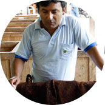

Deeply rooted in the exchange of trust, Yellow Seed’s conscious trade network invites farmers, buyers and members to collaborate and trade together in a way that promotes equity, ecological conservation and community resilience.
There are many incredible people in our food system doing amazing work to uplift the cacao industry beyond the level of compliance. By making these stories visible, we aim to elevate awareness of the good work being done and inspire the continued commitment to do better.
Explore cacao products, learn about the farmers, enjoy new products, make an impact, send farmers feedback and connect with a community of industry leaders working to do better.

“ The value of direct connection is both economic and social. We avoid profit-draining supply chains and intermediaries, helping both us producers and the final consumers. We feel increasingly motivated to not only improve the quality of our product, but our quality of life. In this way, the producer is part of the winning team, and the entire machine runs with more power and efficiency. ”
Carlos Angulo Gonzalez, Allima CacaoChazuta, San Martín, Peru
“ As the global community of small chocolate makers continues to grow, so does the need for small quantities of unique and high quality beans. Finding those beans and building relationships with producers and fermentaries is one of the most important things we do, but it's expensive and time consuming. Yellow Seed is coordinating a movement that connects buyers and producers, solving a problem that so many makers don’t have the time or resources to solve. ”
Minda Nicolas, Dandelion ChocolateSan Francisco, California
{kind=link}
{kind=link}
{kind=link}